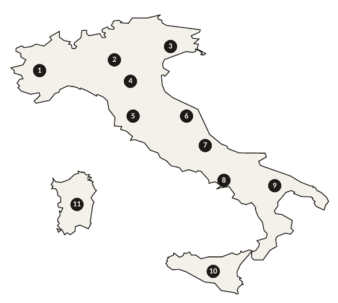

La Carta dei Vini
A small, honest wine list — mostly Italian, always poured with care
Wines by the glass
| Wine | 125ml | 175ml | Bottle |
|---|---|---|---|
| Prosecco DOC Brut Tenuta Ca’ Vescovo | 7.50 | – | 32.00 |
| Pinot Grigio Friuli DOC Zonin Classici | 7.00 | 10.00 | 31.00 |
| Sauvignon Friuli DOC Aquileia Ca’ Bolani | 11.00 | 15.50 | 47.00 |
| Sanleo Bianco Borgo SanLeo | 5.50 | 8.00 | 25.00 |
| Pinot Grigio Blush Delle Venezie DOC Zonin Classici | 7.00 | 10.00 | 30.00 |
| Sanleo Rosso Borgo SanLeo | 5.50 | 8.00 | 25.00 |
| Àpulo Primitivo Salento IGT Masseria Altemura | 7.00 | 10.00 | 31.00 |
| Chianti Classico DOCG Castello di Albola | 10.50 | 15.00 | 45.00 |
● in the list below marks a wine that is also poured by the glass. Sparkling wines by the glass are 125ml only.
Where our wines come from

- Piedmont Barolo, Barbera, Gavi, Langhe Arneis
- Lombardy Lugana
- Veneto & Friuli Prosecco, Valpolicella, Amarone
- Emilia-Romagna Lambrusco, our house Sanleo wines
- Tuscany Chianti, Brunello, Vin Santo
- Marche Pecorino
- Abruzzo Montepulciano d’Abruzzo
- Campania Greco di Tufo
- Puglia Primitivo, Negroamaro, Falanghina
- Sicily Grillo, Nero d’Avola, Chardonnay
- Sardinia Cannonau
Our wines are grouped by style, then by region, moving from the north of Italy down to the south, before a small selection from the rest of the world.